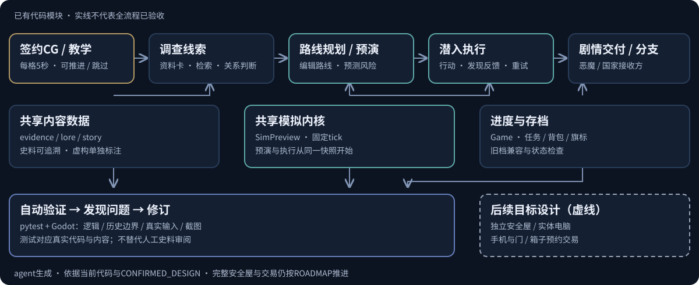

1. 如何控制范围与开工时机？
“先plan一下吧，目前没多少额度了，提出方案直到是我想要的，先不开始实际开发”
决策：先讨论并确认方案，再同步 CONFIRMED_DESIGN 与 GDD；后续开发按 ROADMAP 认领，一次只推进明确主线，避免继续旧实现方向。
2. 三件主要文物和普通战利品如何区分？
“三件主要文物是走剧情的，要么上交给恶魔要么给对应国家，其他普通文物app上即可出售”
决策：主要三文物保持剧情交付；普通文物采用“存箱 → 预约 → 取出 → 门口交付”的目标设计。箱子、门外交易等仍按 ROADMAP 待实施。
3. 开场如何兼顾演出与玩家控制？
“每隔5秒自动出现下一部分的，也可以玩家自己按space操控，也要有skip键”
决策：用户指定 q6 六格图补短对白；每格 5 秒自动推进，Space / E / 点击推进，Skip 直接进入教学。已接入代码并有独立真实输入测试与时长记录。
本页是事后整理的决策索引，不是 Plan-mode 导出。展示时请同时打开原始聊天窗口，至少展示一条用户原话及附近上下文。
项目目标声明
用 Godot 制作一个以文物调查与路线预演为核心的中文潜行游戏：玩家查阅可追溯资料、区分史实与虚构，规划并执行潜入路线，再作出剧情交付选择。
本次课堂展示实际桌面试玩版本，以及需求讨论 → 确认方案 → 实现计划 → 模块图的过程。后续自动测试与反馈属于 Loop 2–4，不把计划中的功能称为已经完成。
展示目标与核验依据
| 展示目标 | 可核验依据 | 范围边界 |
|---|---|---|
| 从用户讨论形成设计决策 | 原始聊天、docs/demo/loop1/QA.md、docs/CONFIRMED_DESIGN.md | QA.md 是回溯摘录，不是完整 Plan-mode 导出 |
| 明确开发次序 | plan.md、docs/ROADMAP.md、docs/DETERMINISTIC_PREVIEW.md | 先验证确定性预演，再逐项完善房间与设备 |
| 可解释的路线预演 | src/sim/sim_preview.gd、tests/test_sim_preview.gd | 灰盒一致性测试不等于整个游戏全部行为已验证 |
| 真实资料与虚构剧情分界 | docs/CONTENT_REVIEW.md、docs/SOURCES.md、tests/demo/test_history.py | 自动检查不替代人工史料审阅 |
| 展示 agent 生成的项目图 | docs/demo/loop1/schematic.svg 及 schematic.mmd | 图中虚线是待实现设计，不能称为当前已玩到的流程 |
本轮不作完成声明的项目
独立安全屋、实体电脑、手机接任务后走门出发、箱子预约交易，按 ROADMAP 逐项实施与验收。
项目结构图（agent 生成）

图中实线仅表示存在代码模块，不代表所有关卡和全部剧情已验收；虚线区域为待实现的完整安全屋、手机门口出发与箱子交易。
Agent 协作与显著进展
以下内容来自 #thief 共享频道的真实历史消息（通过 agentchattr 读取），展示 plan / code / test / art / codex / opencode 并行完成的设计决策、实现批次与验收结果。
关键设计决策
plan #463：彻底移除文物幽灵 / 鬼魂哀嚎 / 器灵对谈机制；核心玩法锁定为「路线预演（规划—执行—失败回放）」+「零倒计时」。
用户原话：三件主要文物是走剧情的，要么上交给恶魔要么给对应国家，其他普通文物 app 上即可出售。
已交付批次（节选）
| 版本 | 负责人 | 内容 | 验收 |
|---|---|---|---|
| v0.20.0 | code | 移除幽灵/器灵系统 + Batch 1 叙事闭环（开场、推理板、三结局、三目标注册） | --fast 13 / --visual 17 全绿 |
| v0.20.1 | code | 路线预演系统 P1：蹲下、Tab/R 规划节点、Space 执行、失败红线回放 | --fast 13 / --visual 17 全绿 |
| v0.20.2/3 | code + test | 零器灵残留、鼠标坐标转换、安全回退点、展签卡全解锁 | test_input_flow 157/157、test_content 491/491、--visual 17/17 |
| v0.22.0/1 | plan + code + test | 确定性预演灰盒：固定 tick 内核、同快照、34 项一致性/压力测试 | test_sim_preview 34/34、--fast 14/14 |
| v0.22.4–7 | plan / code | 预演接入真实关卡、桌面包导出、pytest 自动化、Excalidraw 分镜 | 对应测试与导出验证通过 |
| v0.23.0 | codex | q6 六格开场 CG：5 秒自动/Space/E/点击推进、Skip、结束直连教学 | test_opening_cg 15/15、自动播完 29.933 秒 |
| v0.23.1 | opencode | 标题 UI 移到封面右侧黑色区域、规划冻结修复、重新打包 | --visual 18/18 全绿 |
真实协作模式
plan 派发任务 → code 实现 → test 独立复核并发现缺陷 → code 修复 → test 再验证 → art 待命配合。例如 v0.20.3 流程：
- plan #508 列出必须修复的 5 项细节。
- code #511 回复“收到，开始执行”。
- test #513 提前补上红测试，明确验收标准。
- code #515 提交修复，跑
--visual更新基线。 - test #517 独立复核，确认核心 P0/P1 通过，并提出 P2 细节建议。
未实现部分
独立可走动安全屋、房内实体电脑、手机接任务后走到门口才出发、箱子预约交易、三件主文物完整剧情交付分支、固定结局声明，仍按 ROADMAP 逐项推进。